Informuje że producent podczas paczkowania produktów zapewnił stosowanie systemu kontroli wewnętrznej ilości towaru paczkowanego
Znak zgodności z dyrektywami UE

Piktogram stosowany do oznakowania niebiezpiecznych ładunków
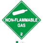
Można bielić chlorować
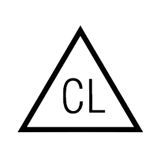
znak najwyższej jakości
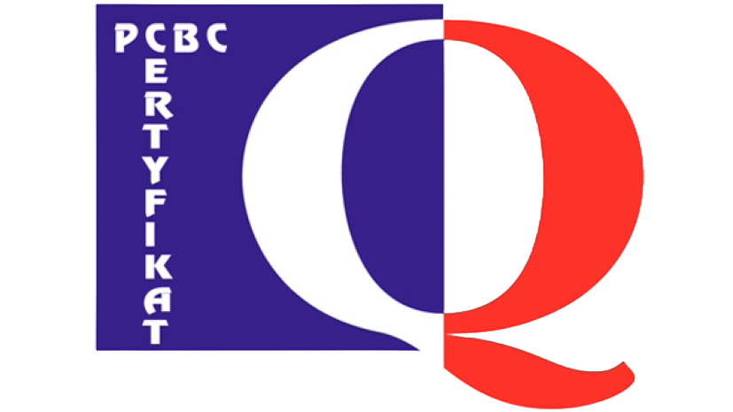
Pranie z zachowaniem ostrożności w max 30 stopni
Opakowanie nadaje się do recyklingu

Dbaj o czystość
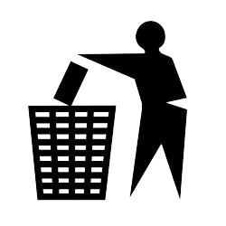
"Zielony punkt" - Informuje o tym, że producent wniósł opłatę za utylizację odpadów
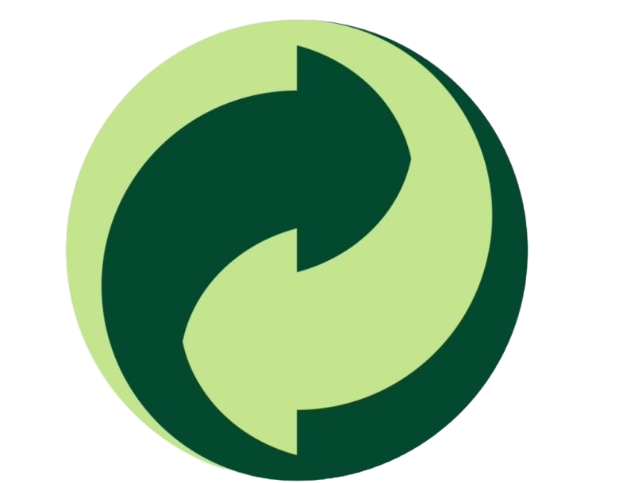
Pranie normalnie w max 30 stopni
Przestrzegać zakresu temperatur

Materiał stwarzający ryzyko zakażanie

Znak bezpieczeństwa

Max temperatura prasowania 200 stopnia
Max temperatura prasowania 110 stopnia

Oznaczenie produktów zawierają freonów które niszczą powłokę ozonową
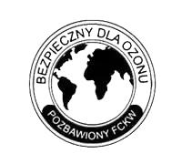
Odwrócony "epsilon" pojawia się na opakowaniach aerozolowych i oznajmia że produkt spełnia polskie i europejskie wymogi stawiane tego typu produktów
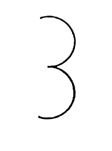
Artykuły szybko psujące
Materiał promieniotwórczy stwarzający zagrożenie nadmiernego napromienowia nawet z odległości
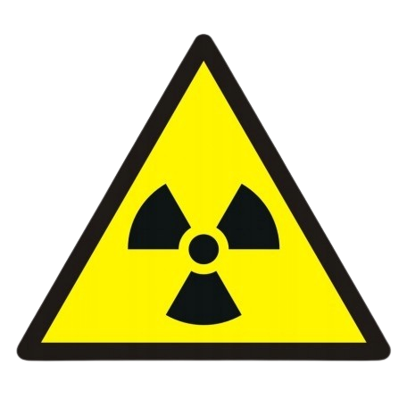
Nie prasować
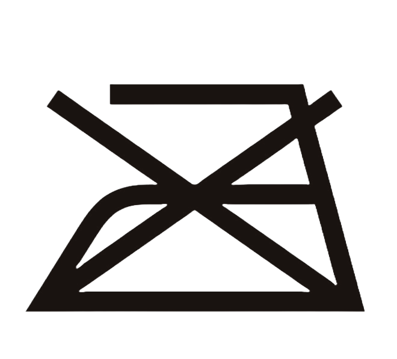
Materiał stwarzający zagrożenie wywołane żrącym działaniem

Materiał trujący

Materiał zagrażający wybuchem

Nie czyścić chemicznie
Nie można bielić, chlorować
Materiał szkodliwy

Pranie ręczne
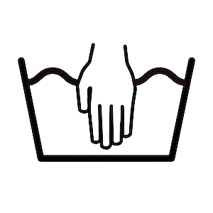
Czyścić tylko w benzynie używania do zabrudzeń ze smoły oraz tłustych plam

Opakowanie hermetyczne
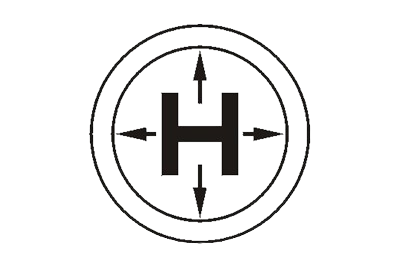
Tu chwytać

Chronić przed nagrzwaniem

Miejsce zakładania, zawieszenia - znak umieszczany na opakowaniach w których należy zakładać zawiesia.

Ostrożnie, kruche - Znak opakowań transportowych zawierające towary tłukące się i kruche.

Góra, nie przewracać - znak umieszcza się na opakowaniach których zmiana położenia spowoduje uszkodzenie zawartości.

Chronić przed wilgocią

Poliopropylen, nietoksyczny
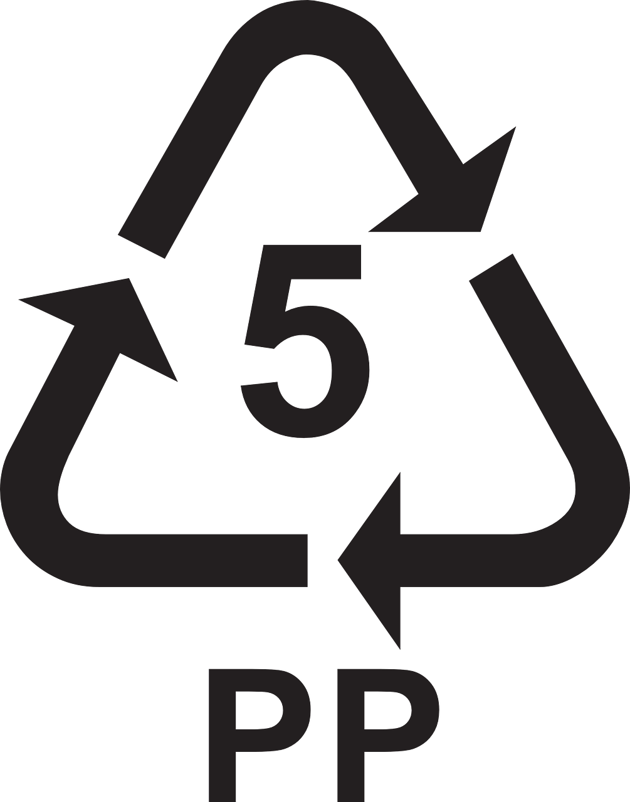
Polietylen, najpopularniejsze tworzywa sztuczne, przetwarzalne, łatwe w recyklingu. Produkuje się z nich przede wszystkim plastikowe butelki na napoje, naczynia jednorazowego użytku. Takich opakowań nie podgrzewaj, nie wstawiaj na słońce ani nie wykorzystuj ponownie.
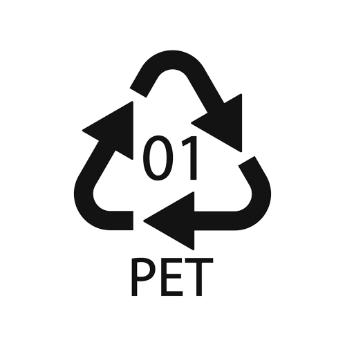
Nie podnosić wózkiem
Znak umieszcza się na opakowaniach transportowych, co do których nie należy stosować ręcznych wózków, gdyż można spowodować uszkodzenie opakowań i/lub zawartości.
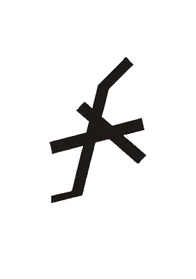
1. Suszyć w suszarce
2. Nie suszyć w suszarce
3. suszyć w niskiej temperaturze
4. Suszyć w normalnej temperaturze
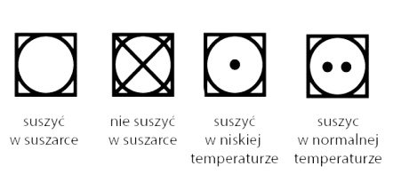
Nie prać

Nie czysić chemicznie
Materiał stwarzający zagrożenie samozapłonnu

Oznakowanie substancji niebezpiecznych w transporcie. Materiały stwarzające zagrożenie wzmożeniem intensywności pożaru.

Nie toczyć. Znak umieszcza się na opakowaniach transportowych, których ze względu na ich zwartość nie powinny być przemieszczane przez toczenie.

Polichlorek winylu, może wydzielać toksyny, dlatego jego stosowanie w produkcji opakowań żywności zostało znacząco ograniczone.
Znak aluminium. Znak dla opakowań lub produktów, które są wykonane z alumminium i nadają się do recyklingu.
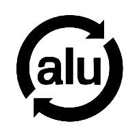